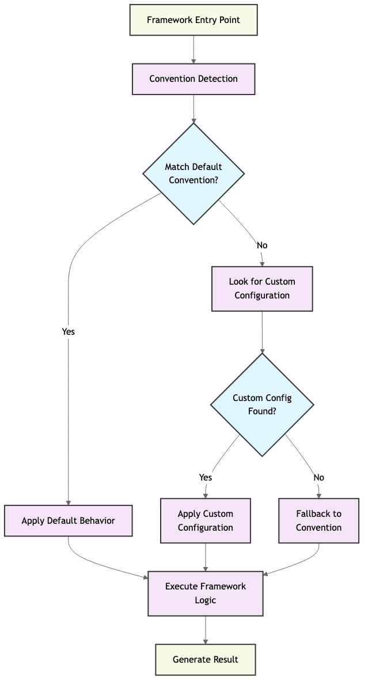

约定优于配置：从资深架构师视角解读现代软件设计
· 816 words · 5 minutes reading time
约定优于配置：从资深架构师视角解读现代软件设计🔗

1. 为什么我们需要 CoC？从配置驱动到架构哲学🔗
早期的 Java EE 时代，企业开发者需要大量手工编写 XML 来描述系统结构：
- 重复声明：每个 bean、controller、service 都需手动配置
- 关注点错位：配置逻辑和实现逻辑分离
- 学习曲线陡峭：理解项目等于解析配置文件森林
如果 90% 的项目结构类似，为什么不直接通过结构约定自动生成？这正是 CoC 的初衷。
2. CoC 的定义与核心理念🔗
“不要为框架能够推断的内容写配置。” —— DHH（Rails 之父）
核心思想：
- 提供合理的默认行为
- 通过命名与目录结构约定完成自动配置
- 只需对“例外情况”进行显式配置
3. 主流框架中的 CoC 实现🔗
| 框架 | CoC 展现形式 | 常用工具 |
|---|---|---|
| Rails | 基于目录结构自动加载 | rails generate scaffold |
| Spring Boot | 注解 + Classpath 自动装配 | @ComponentScan 等 |
| Django | App 模块化 + 命名约定 | startapp, urls.py |
| Laravel | 控制器 + 路由资源化 | artisan make:controller |
| NestJS | 装饰器 + 模块结构 | @Controller, @Module() |
这些框架都在通过“结构约定”统一开发体验，使开发者关注业务逻辑。
4. 从框架技巧到工程哲学🔗
CoC 并不是语法糖，而是工程抽象的重要体现。
- 统一代码风格：避免无意义的自由
- 降低认知负担：减少重复选择
- 提升协作效率：新成员快速理解项目结构
- 易于迁移与演进：架构升级更可控
5. 架构图与流程图🔗
此图展示了现代框架如何整合：
- 默认行为
- 文件结构
- 命名规范
- 模块注入方式
...统一为一体的约定式架构系统。
6. CoC 在 DevOps 与微服务中的作用🔗
DevOps 工具也普遍使用约定：
- Terraform：变量命名规范、文件分层
- Kubernetes：YAML 结构、标签匹配、资源命名
- CI/CD：如
.github/workflows/、Jenkinsfile的默认路径
CoC 是 DevOps 能够扩展与模块化的基础。
7. 代码迁移的桥梁：技术是可以迁移的🔗
一旦掌握 CoC 架构方式，从 Rails 到 NestJS、Laravel 并不难。示例：
// NestJS
@Controller('posts')
export class PostController {
@Get(':id')
async show(@Param('id') id: string) {
return this.postService.findOne(id);
}
}
// Laravel
public function show($id) {
$post = Post::find($id);
return view('posts.show', compact('post'));
}
# Rails
def show
@post = Post.find(params[:id])
end
✨ 结构、命名、路由方式完全一致。掌握一套结构模型，语言只是工具。
8. AI、自动化与 CoC 的新演化🔗
即使在 AI 工程与 MLOps 中：
- 文件结构约定：
data/,model/,train.py,inference.py - 工具约定：MLflow, Kubeflow 等都依赖默认路径
- Prompt 编程：模型根据结构提示生成代码
结构决定生成结果，CoC 在 AI 编程中价值更大。
9. 总结：CoC 是现代架构的通用语言🔗
CoC 已成为：
- 软件工程师的共同认知
- 架构设计的基础规则
- 多语言迁移的桥梁
- 软件自动化与团队协作的核心
“约定是送给团队未来成员的一份礼物。”
作者：资深架构师 / 平台工程专家